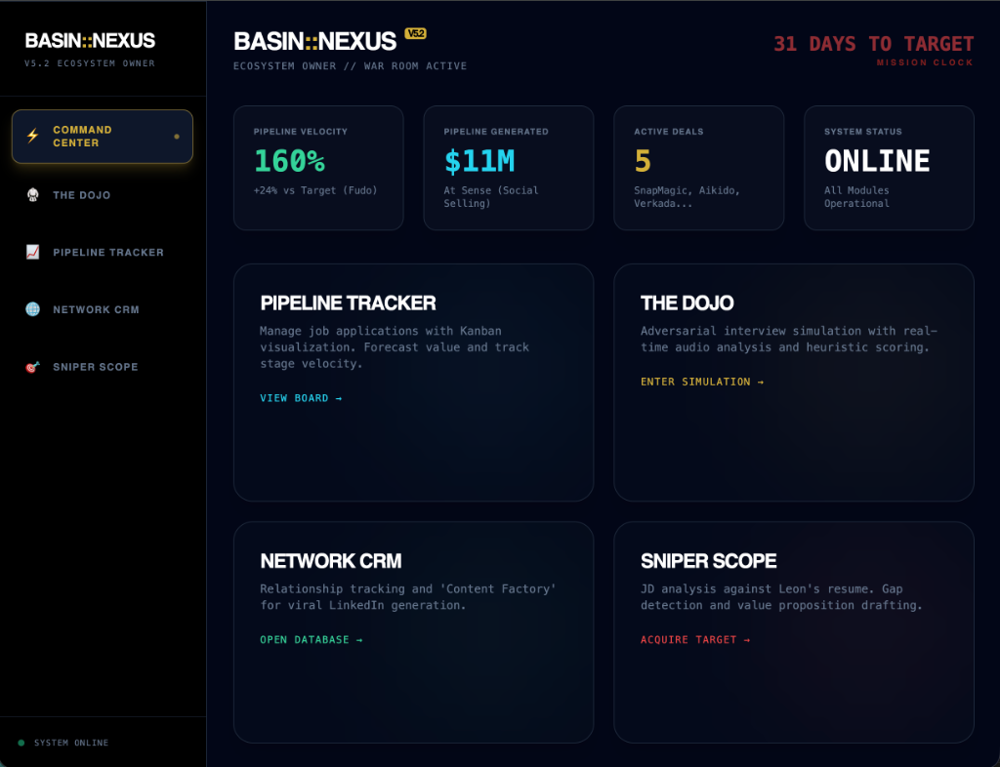
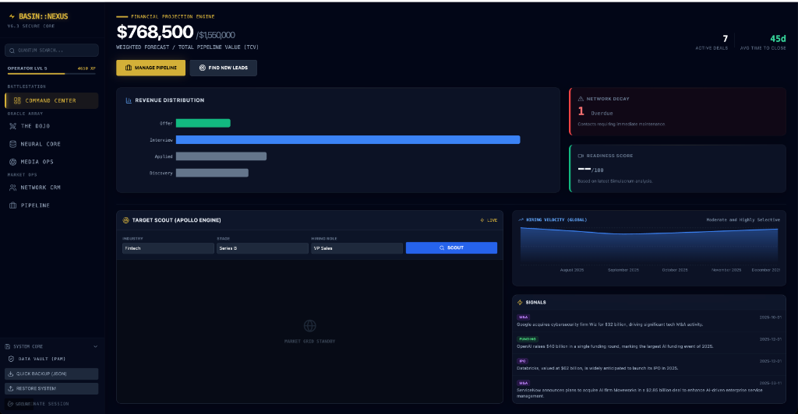

BASIN :: NEXUS
The System in Action
Production Implementation — Fudo Security Case Study
Live Dashboard Views

War Room: Market Pulse & Pipeline

Command Center: Signal Intelligence

Nexus Home: System Overview

Financial Projection Engine
Unit Economics: Traditional vs. Bifurcated Model
| Metric | Traditional SDR | Bifurcated (Nexus) | Delta |
|---|---|---|---|
| Team Size | 10 SDRs ($800k OTE) | 1 GTM Eng + 3 SDRs ($560k) | -70% headcount |
| Manual Work (weekly) | 400 hrs (40 × 10) | 30 hrs (10 × 3) | -92% toil |
| Signal→Outreach | 24-48 hours | <5 minutes | -99.7% latency |
| Qualified Meetings/Mo | 100 (10/SDR) | 150 (50/SDR) | +50% output |
| Cost Per Meeting | $670 | $211 | -68% CAC |
| Annual Cost | $804k | $380k | $424k saved |
The Machine Handles
- Signal detection (GitHub, LinkedIn, funding)
- LLM-powered ICP scoring
- Contextual enrichment via Clay
- Initial outreach (low-complexity)
- CRM sync and data normalization
The Human Handles
- Executive ghostwriting
- Complex objection handling
- Multi-threaded deal navigation
- Trust-building and closing
- High-stakes meeting orchestration
"Code is the new revenue capacity. Headcount is no longer a proxy for growth."